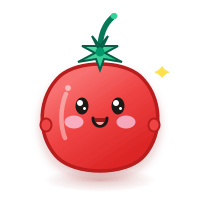

SmartFarm IoT Dashboard
Friendly Multi-Zone Monitoring & Smart Irrigation Platform
🚜 Farmer Control Centre
Welcome, Farmer Aryan! Simple daily monitoring, large high-contrast zone readings, and instant one-touch pump controls for your crops.
Potato Patch 🥔
Solanum tuberosum • Deep Loam
Tomato Field 🍅
Solanum lycopersicum • Sandy LoamBrinjal Nursery 🍆
Solanum melongena • Peat Mix (Sheltered)📋 Recent Irrigation Activity
Audited Log| Timestamp | Crop Zone | Action | Water Dispensed | Trigger Mode |
|---|---|---|---|---|
| Just now | System Ready | All pumps on standby | 0.00 L | INIT |
🔔 Farm Crop Alerts
MQTT Protocol — Interactive Communication Centre
Understand the lightweight Publish/Subscribe messaging protocol powering modern smart agriculture. Inspect topics, live JSON payloads, and watch messages route through the broker in real time.
Transducer: Pin A0 (ADC)
Action: Serializes JSON telemetry
simulated-mqtt.smartfarm.local:1883Active Topics: 4 registered
QoS Mode: Level 1 (At least once)
Routing: Topic tree matching
Subscription:
smartfarm/#Action: Deserializes & updates UI
Latency: ~12 ms
{
"zone": "zone01",
"sensor": "soil_moisture",
"value": 30.0,
"unit": "%",
"timestamp": "2026-11-18T19:30:00.000Z",
"status": "adequate"
}| Time | Dir | Topic | QoS | Payload Preview | Status |
|---|---|---|---|---|---|
| 19:00:00 | PUB | smartfarm/zone01/soil/moisture |
QoS 1 | {"zone":"zone01","value":30.0} |
Delivered |
SmartFarm IoT Network Architecture & Transducer Catalog
Verified audit of physical sensors and actuators implemented in this project, mapping electrical properties to digital IoT telemetry.
The IoT Gateway's 7-Step Ingestion & Control Pipeline
How field transducer signals are ingested, routed, processed, and displayed on the farmer dashboard:
Multi-Hop Network Topology vs Star Topology Simulator
Physical farm obstacles (concrete barns, metal silos, storage sheds) attenuate direct radio signals. Witness why a Multi-Hop Mesh Topology achieves 100% packet delivery where a traditional Star Topology fails.
🎓 Academic Network Architecture Comparison: Star vs Multi-Hop Mesh
Direct Sensor-to-Gateway Link
- Architecture: Every sensor node attempts to communicate directly with the central gateway without intermediate forwarders.
- Simplicity: Minimal software overhead; sensors don't require routing tables or mesh state tracking.
- Critical Weakness: Highly vulnerable to physical farm obstacles (concrete barns, silos, brick walls, dense tree canopies). Nodes behind obstacles experience 100% packet loss due to severe radio attenuation.
- Range Limit: Maximum coverage is strictly constrained by the single-hop RF transmitter power of the leaf sensor node.
Cooperative Multi-Point Mesh Routing
- Architecture: Messages travel through intermediate pole-mounted relay nodes (e.g. Potato ➔ Relay 02 ➔ Gateway), traversing around buildings and walls.
- Reliability: Achieves 100% packet delivery in obstructed environments where direct line-of-sight is blocked.
- Self-Healing: Mesh protocols (such as Zigbee Pro, RPL, or LoRa Mesh) dynamically re-route traffic if an obstacle or node fails.
- Engineering Trade-Off: Introduces incremental per-hop latency (~10–25ms per relay) and increased energy consumption on relay nodes that must maintain radio receive windows.
End-to-End IoT Data Flow vs Reverse Actuation Control Flow
IoT systems are closed-loop architectures. Environmental readings flow forward to inform decisions, while control commands flow in reverse to actuate physical irrigation valves.
Stage 1: Physical Transducer Sampling
The capacitive soil moisture probe detects changes in dielectric permittivity around crop root zones and converts soil moisture into an analog voltage signal ranging between 0V (bone dry) and 3.3V (saturated).
Local (Edge) vs Remote (Cloud) IoT Architecture
Compare an on-premise local edge architecture with a global cloud-connected IoT architecture.
Local Edge Architecture
Implemented in SmartFarmRemote Cloud Architecture
Enterprise IoT ModelGood morning, Farmer! 🌱
Farm Health Score
Overall system vitality
🌿 FlourishingFarming Tip of the Moment
Smart agriculture insights & conservation wisdom
Capacitive Moisture Sensing
Capacitive sensors measure soil dielectric permittivity rather than electrical resistance, preventing galvanic probe corrosion and ensuring years of stable readings.
My Farm Zones
Three independently monitored botanical zones with dedicated simulated capacitive sensors, crop biology, and automatic irrigation relays.
Potato
Solanum tuberosum • Loam SoilTomato
Solanum lycopersicum • Sandy LoamBrinjal / Eggplant
Solanum melongena • Peat Mix (Sheltered)Interactive Watering Hub
Tactile pump switches, animated water streams, flow accumulation accounting, and manual override controls.
Operating Mode & Master Lever
AUTO ActiveAutomatic Mode Active: All 3 virtual pumps are governed by closed-loop threshold logic.
Manual Irrigation Lever
Switch to Manual mode to activate
Smart Water Dispenser
Real-time hydraulic volume calculation per active relay
Smart Weather & Micro-Climate Station
Ambient parameters actively drive natural soil moisture evaporation rates and rainfall infiltration.
Ambient Temperature
Simulated Field Sensor (DHT22)Optimal biological temperature for root development.
Relative Humidity
Field Hygrometer SensorBalanced vapor pressure deficit; moderate transpiration rate.
Precipitation Rate
Simulated Tipping BucketRainfall infiltrates Potato & Tomato zones directly.
Evapotranspiration
Calculated Drying MetricPredicts soil depletion rate based on ambient heat and vapor deficit.
Simulation Deck & Sensor Diagnostics
Ingest telemetry manually, test rubric presets, or inject simulated hardware faults.
📋 University Assessment Rubric Test Cases (1-Click Instant Demo):
⚡ Hardware Fault Injection & Safety Interlock Testing:
Simulate sensor faults. The fail-safe automatically trips pumps OFF to prevent catastrophic flooding.
Telemetry Analytics & Diurnal Trends
Multi-zone tracking with smooth Bezier curves and CSV historical export.
Farm Activity & Incident Center
Real-time audited feed of sensor readings, irrigation actions, and safety interlocks.
Achievements & Gamification
Meaningful badges unlocked through genuine simulated events and measurable agricultural conservation metrics.
Green Guardian
Maintain all 3 zones in optimal moisture range for over 2 continuous minutes.
LockedWater Saver
Achieve greater than 90% water conservation efficiency with zero drought alerts.
LockedPotato Harvest
Successfully revive Zone 1 Potato from low moisture (<25%) back to thriving.
LockedSheltered Crop Master
Verify Zone 3 Brinjal remains protected and sheltered during simulated rainfall.
LockedQuick Responder
Detect and resolve a simulated sensor fault within 30 seconds.
LockedSmart Farmer
Demonstrate both automated closed-loop irrigation and manual override control.
LockedInteractive 4-Layer IoT Architecture
Click each layer to explore hardware mappings, simulated MQTT topics, and closed-loop control mathematics.
Perception & Sensing Layer
Simulated field transducers: Capacitive soil moisture probes (Pins A0-A2), DHT22 thermistor/hygrometer, and tipping-bucket rain gauge.
Ingestion & Communication Layer
Simulated MQTT broker topic bus, analog-to-digital (ADC) conversion, range clamping, and sensor health diagnostics.
Decision-Making & Logic Layer
Deterministic closed-loop threshold logic, safety fail-safe interlocks, scheduling windows, and manual override isolation.
Actuation & Physical Output Layer
Virtual relay drivers (Pins D4-D6), submersible pumps, dynamic turbine visuals, and water flow volume accumulation.
Perception & Sensing Layer
Theoretical Basis: In IoT architectures, the perception layer transforms physical phenomena into electrical signals.
smartfarm/zones/{zoneId}/moisture
Coursework Attribution & System Specifications
Assessment submission details for ITEC 310 at Amity University Dubai.
Academic Attribution
Software & Platform Details
Simulated MQTT Broker Bus
simulated-mqtt.smartfarm.local:1883smartfarm/zones/+/telemetrysmartfarm/actuators/pumps/setsmartfarm/alerts/incidentSystem Configuration & Thresholds
Calibrate independent zone parameters, flow rates, and schedules. Changes persist automatically in LocalStorage.